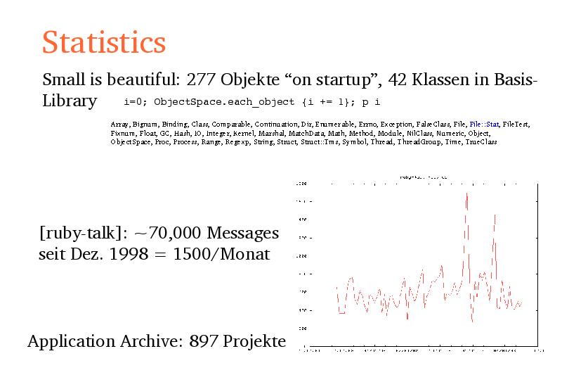

Notes:
German books:
- 2x Programmieren mit Ruby (Stefan,Armin,Wyss/Dave&Andy)
- Ruby: Das Einsteigerseminar
English:
Programming Ruby, RDG, The Ruby Way
Ruby in a Nutshell (matz), Making Use of Ruby
Teach Yourself Ruby in 21 days
http://www.andsoforth.com/galleries/seattle2002/tn/dcp_0682.jpg.html
Number of Perl ports (FreeBSD): 992
Debian unstable:
- Ruby 170
- Python 417